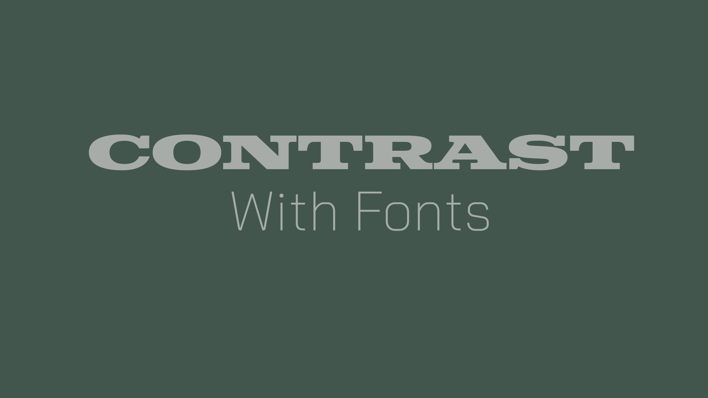
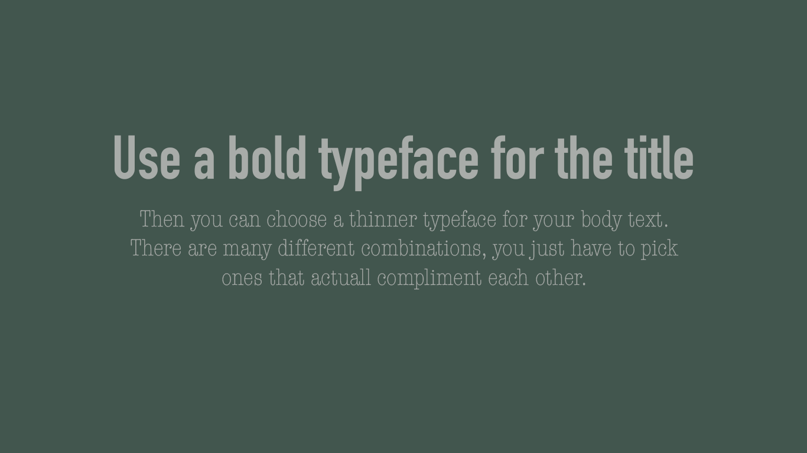
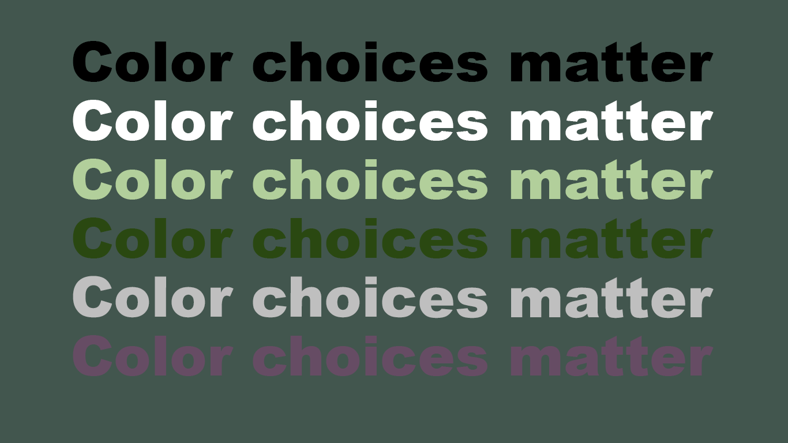
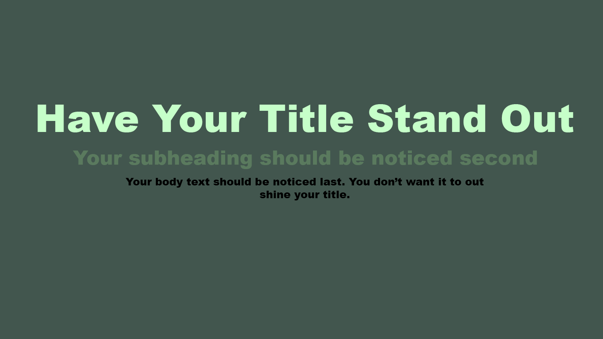

The best way to choose fonts is to make sure they are dramatically different from each other yet complement the design. You wouldn’t want to choose two serifs that look similar, there is no contrast and in fact, it looks like a design mistake.

Using contrast is a great way to add visual interest to your design, just be careful to not choose fonts that are too drastically different from each other. (This image was made by me.)
One of these ways to choose fonts is to choose a pair of opposites. A good example of this is to use a big and bold serif for your headline and a nice traditional serif typeface for the body copy.
This example shows a bold sans-serif typeface with a thin serif typeface. You have to be aware of the types of fonts you pair, and how different they are. (This image was made by me.)

Learning the fundamental rules of type, so you can break them later, will help you become a better designer. It just takes practice and a little knowledge.
Color choice helps determine whether the content on a page is readable. Legibility is optimized with an appropriate level of color contrast between the text and the background. Too little contrast makes the text hard to read; too much contrast is hard on the eyes. A classic example of color contrast is black text on a white background. If you look closely, you'll notice that many websites actually use dark grey text on a white or off-white background in order to maximize legibility while minimizing eye strain.

Be careful when choosing text colors when your background color is so distinct. It's easy to lose your text when the colors are too similar. (This image was made by me.)
Visual hierarchy is a vital part of good design. If everything on your page looks like it has the same importance, then nothing appears important. You need to use visual cues to tell people what to pay attention to first, second, third, etc. Create visual hierarchy through things like scale (the relative size of elements) and color. Typographic hierarchy can be created by using different typefaces, sizes, and font weights. The point is to make sure the most important element on the page stands out among the rest.
Not only does the size of your text create heirarchy, but color too. It's nice to use a conrasting color to make something stand out, especially your title. (This image was made by me.)

Each principle works best in specific contexts, so you don't need to apply all of them at once. Use them intentionally—based on what your design needs to communicate.